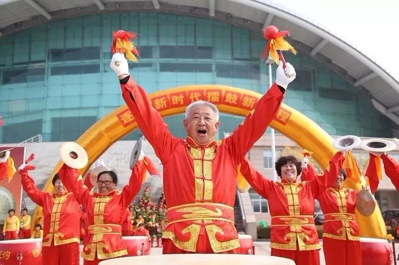
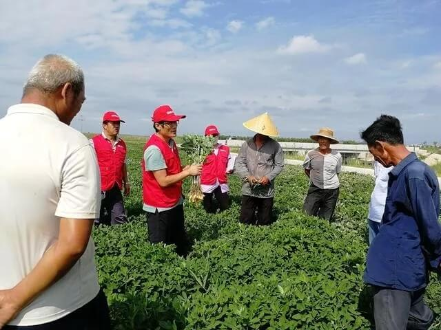
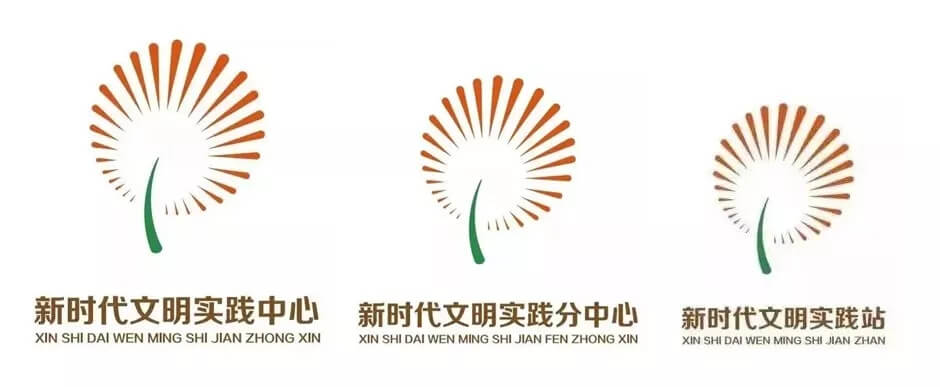
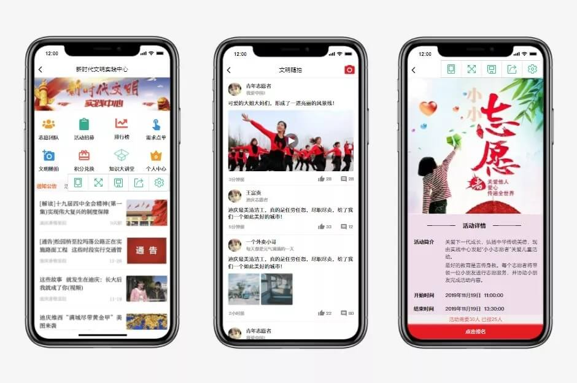

阳光云视新时代文明实践中心产品火热上线，“着力两步走、五字保畅通”
2018年7月6日，中央全面深化改革委员会研究通过《关于建设新时代文明实践中心试点工作的指导意见》，把建设新时代文明实践中心试点工作，纳入全面深化改革的重要议程。建设新时代文明实践中心是党中央重视和加强基层思想政治工作的战略部署，是深入宣传习近平新时代中国特色社会主义思想的重要载体，是打通宣传群众、教育群众、关心群众、服务群众“最后一公里”的重要举措。
各地新时代文明实践建设工作如火如荼，切实开展了很多群众乐意、满意的文明实践活动，在谋划上也颇接地气。


各地新时代文明实践中心建设如火如荼（图片来自网络）
如今，县级融媒建设与新时代文明实践中心建设同时开展、相辅相成，各自发挥职能特长，精准施策，互相借力。县级融媒体中心侧重宣传，同时避免发生负面网络舆情事件，它的工作方式是线上为主，移动优先。县文明实践中心的工作是调动县域资源，指导乡镇文明实践所、村文明实践站为百姓服务，它的工作方式是线下为主，与群众面对面。县级融媒体建设不能忽略线下，而新时代文明实践中心建设也不能忽略线上，这就需要把线上线下两种资源统筹起来，让“两个县级中心”互相借力，互相促进。

ONAIR阳光云视作为拥有国内最多融媒建设案例经验的技术服务商，通过不断创新，从实际需求出发，发布新时代文明实践中心线上建设产品方案，满足文明实践中心建设各类工作开展要求。

领：三级设置“领”
实践中心建设需构建“实践中心—实践分中心—实践站（所）”三级组织体系，形成新时代文明实践合力。阳光云视新时代文明实践中心建设产品充分发挥云服务特点，可为实践中心、实践分中心、实践站（所）提供统一接口，各类功能弹性扩展，满足各区域联动、管控需求，助力增强基层党组织的文明实践引领能力。
帮：志愿活动”帮“
新时代文明实践中心的主体力量是广大志愿者，志愿活动也是主要的活动方式之一，产品充分发挥移动端优势特色，将志愿者招募、管理、培训等功能优化完善，引入积分、考评机制等功能，有效记录志愿者服务历程，进一步调动广大志愿者的积极性、主动性、创造性。对于文明实践活动，除通过自身媒介进行传播推广外，也可与融媒体打通，扩大活动宣传效果，提高活动影响力。
引：群众需求“引”
了解、征集群众意愿，掌握并且把群众需求作为文明实践的指挥棒，是新时代文明实践中心建设的重要组成，阳光云视新时代文明实践中心建设产品功能涵盖爆料、法律援助、心理咨询、技能培训等多个模块，可根据当地区域群众实际需求“菜单”自由组合搭配，同时向实践站（所）进行“点单”,助力以群众需求为引导的实践中心建设。
聚：常设项目”聚“
文明实践工作的开展需要持之以恒，重在实践、贵在常态，各级文明实践单位通过梳理、整合各类资源，根据各项目的参与范围和活动规模，可将活动分为集中性与经常性项目，逐步树立品牌，发挥政策、文化、医疗、科普、清洁等各业态项目资源汇聚，形成服务合力，据此，方案中特设了摄影圈、书法圈等常设项目板块功能，以线上互动+线下活动的方式，聚合并加强实践中心与群众的日常沟通联系。
融：整合资源“融”
实践中心建设需充分整合区域内各级各类资源存量，融入文明实践工作，形成合力效应。新时代文明实践中心给融媒体中心提供现实营养，融媒体给实践中心插上互联网的翅膀，阳光云视新时代文明实践中心产品充分发挥省、市、县融媒建设经验及移动化、信息化、大数据、云服务等技术优势，让融媒体成为广纳多方信息的高速路，使文明实践中心成为汇集多方智慧的连心桥，为打通宣传群众、教育群众、关心群众、服务群众的“最后一公里”保驾护航。 ONAIR 阳光云视新时代文明实践中心产品火热上线，欢迎致电咨询：400-900-7025